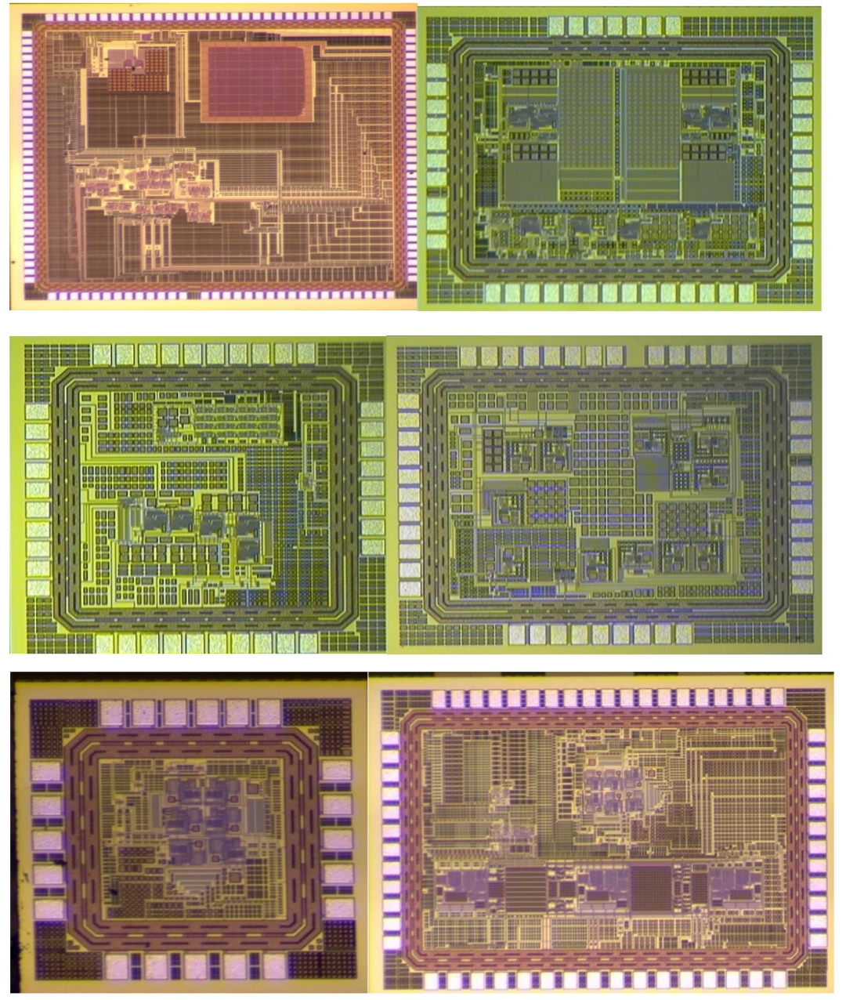

Research
Academic Research Motivation & Summary
According to the report published by WHO, 17.9 million people died in 2019 due to heart disease which represents 19% of the global death. It is well known that the people with heart disease and respiratory conditions are more prone to the COVID 19. Therefore, the regular measurement of the vital bio signs like blood oxygen (SpO2), body temperature, Heart rate (HR) and blood pressure (BP) becomes one of the common practices. To enable individuals interested in tracking their body’s key health indicators, wearable devices are one of the main choices. Photoplethysmography (PPG) sensors is well known technology to measure all the above mention bio signs (except temperature). Blood pressure (BP), blood Flow volume (BFV) is a basic physiological quantity and prolonged abnormal BP/BFV which will precipitate different kinds of cardiovascular diseases. The major challenge in this research to design a motion artifact free, mispositioning error free and temperature dependence free wearable flexible PPG sensor. The key challenges associated with the OLED-OPD PPG sensor which will be addressed using circuit design and Digital Signal processing techniques are:
- Degradation of the organic sensor characteristics
- Non-linearity and Parasitic associated with OLED and OPD
- Noise and Motion artifact
- Signal saturation and Mispositioning
- Temperature dependencies
- Absence of robust, wide dynamic range and low noise on-chip microsystem for OLED-OPD sensor
- Based on the above mention discussion, my research was focus to design and developed a robust, wide dynamic range and low noise on-chip microsystem for OLED-OPD PPG sensor.
An overview of the blocks design by me during my PhD research are compiled in the Figure shown below:
Publications
- Pandey, R.K., et al. A Dual-Channel PPG Readout System with Motion-Tolerant Adaptability for OLED-OPD Sensors, IEEE Transactions on Biomedical Circuits and Systems 2022. (invited ISCAS)
- Pandey, R.K., et al. Design and development of a photoplethysmography based microsystem for mental stress estimation, Microsyst Technol 2022.
- Pandey, R.K., et al. Technology scaling impact on VLSI interconnect and low swing signaling technique, Microsyst Technol 2022 (Review paper).
- Pribadi, E.F., Pandey, R.K. * & Chao, P.CP. A new delta-sigma analog to digital converter with high-resolution and low offset for detecting photoplethysmography signal, Microsyst Technol 2022.
- Pribadi, E.F., Pandey, R.K. * & Chao, P.CP. Design and implementation of a new light to digital converter for the PPG sensor, (2020) Microsystem Technologies, 2021.
- Pandey, R.K., Lin, TY. & Chao, P.CP. Design and implementation of a photoplethysmography acquisition system with an optimized artificial neural network for accurate blood pressure measurement. Microsyst Technol (2021).
- Pandey, R.K., Chao, P.CP. External temperature sensor assisted a new low power photoplethysmography readout system for accurate measurement of the bio-signs. Microsyst Technol (2020).
- Pribadi, E.F., Pandey, R.K*. & Chao, P.CP. Optimizing a novel PPG sensor patch via optical simulations towards accurate heart rates. Microsyst Technol 26, 3409–3420 (2020).
- Pandey, R.K., Huang, T.H., Ho, WH. et al. Achieving high sensing in 0.5 nA for the driving pixel currents in AMOLEDs with settling time of 7 µs by a new external current sensing circuit. Microsyst Technol 2020.
- Ming-Hua Yeh, Paul C.-P. Chao, Tse-Yi Tu, Yuan-Hwa Kao, and Rajeev Pandey, “A Fast-Digital Chip for Estimating Blood Pressure Using a Non-Invasive, Cuffless PPG Sensor,” Microsystem Technologies, 2020.
- Ching-Cheng Yang, Rajeev Pandey and Paul C.-P. Chao “An Efficient Energy Harvesting Circuit for Batteryless IoT Devices” Microsystem technology springer, 2019.
- Ming-Cheng Liu, Eka Fitrah Pribadi, Paul C.-P. Chao, Rajeev Kumar Pandey “A Low-Power Reference-Less Clock/Data Recovery for Visible Light Communication Devices Requiring Low Data Throughput” Microsystem technology springer, 2019.
Journals
- Pandey, R.K., Paul C.-P Chao “A PPG Readout Integrated With RPTT Estimation in Analog For Blood Pressure Measurement” 2023 IEEE ISCAS, 2023.
- Pandey, R.K., Paul C.-P Chao “A Low-Power 54μW Adaptive Analog Front-End with Adaptive Intensity Control for an Organic PPG Sensor in Wearable Devices” 2021 IEEE Sensor, 2021.
- Pandey, R.K., Paul C.-P Chao “An Adaptive Analog Front End for a Flexible PPG Sensor Patch with Self-Determined Motion Related DC Drift Removal” 2021 IEEE ISCAS, 2021.
- Pandey, R.K., Eka Fitrah Pribadi’ and Paul C.-P Chao, “A New Adaptive Readout System for a New OLED OPD Flexible Patch PPG Sensor” IEEE Sensor 2019.
- Pandey, R.K. and Sanjeev Kumar Pandey. “High Resolution Comparator Design for RF Imager.” 2018 IEEE RAICS, 2018.
- R. K. Pandey and S. K. Pandey, "Analyzing the Performance of 7nm FinFET Based Logic Circuit for the Signal Processing in Neural Network," 2020 IEEE RAICS, 2020.
- K. N. G. Priyanka ; Paul C.-P. Chao ; Tse-Yi Tu ; Yung-Hua Kao ; Ming-Hua Yeh ; Rajeev Pandey, Fitrah P “Estimating Blood Pressure via Artificial Neural Networks Based on Measured Photoplethysmography Waveforms," 2018 IEEE SENSORS, 2018.
- Yi-Cheng Wu ; Yung-Hua Kao ; C.-P. Paul ; Chin-Long Wey ; Thilo Sauter ; Fitrah P Eka ; Rajeev Pandey, Design and Implementation of OLED Driving and OPD Readout Circuitry for an Optical Vibration Sensor," 2018 IEEE SENSORS, 2018.
Selected Conferences
Micrographs
-

Demo Videos
Measurement of OLED-OPD Sensor Patch with Readout IC
Measurement of Pulse Rate and Blood Pressure Using PPG Signal
Measurement of Blood flow Volume Using PPG Signal
 Home Home |
| About |
| Honors |
| Research |
| E-library |
| Teaching |
 |
 |